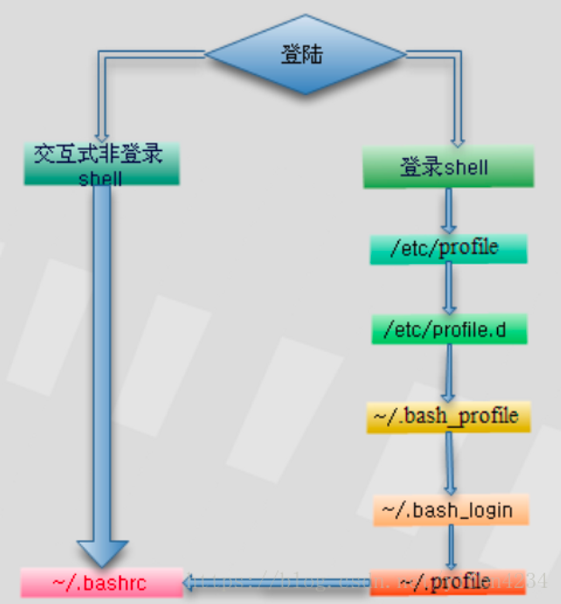

对于linux或者mac，bash是用户和系统交互的最基本的脚本环境。
而**zsh（Z shell）**是bash的一个替代品，他对于bash有了很多的优化，无论是使用命令，外观，体验，能够让用户更方便顺畅的使用Terminal。
Linux提供了修改和查看环境变量的命令：
- echo 显示某个环境变量值 echo $PATH
- export 设置一个新的环境变量 export HELLO=“hello” (可以无引号)
- env 显示所有环境变量
- set 显示本地定义的shell变量
- unset 清除环境变量 unset HELLO
- readonly 设置只读环境变量 readonly HELLO
环境变量执行顺序

1. profile、 bashrc、.bash_profile、 .bashrc
bash会在用户登录时，读取下列四个环境配置文件：
全局环境变量设置文件：/etc/profile、/etc/bashrc。用户环境变量设置文件：~/.bash_profile、~/.bashrc。
读取顺序：① /etc/profile、② ~/.bash_profile、③ ~/.bashrc、④ /etc/bashrc。
**① /etc/profile：此文件为系统的每个用户设置环境信息，系统中每个用户登录时都要执行这个脚本，如果系统管理员希望某个设置对所有用户都生效，可以写在这个脚本里，该文件也会从/etc/profile.d目录中的配置文件中搜集shell的设置。 **
②**~/.bash_profile**：每个用户都可使用该文件设置专用于自己的shell信息，当用户登录时，该文件仅执行一次。默认情况下，他设置一些环境变量，执行用户的.bashrc文件。
③~/.bashrc：该文件包含专用于自己的shell信息，当登录时以及每次打开新shell时，该文件被读取。
④**/etc/bashrc**：为每一个运行bash shell的用户执行此文件，当bash shell被打开时，该文件被读取。
2 .bashrc和.bash_profile的区别
- .bash_profile会用在登陆shell， .bashrc 使用在交互式非登陆 shell 。简单说来，它们的区别主要是.bash_profile是在你每次登录的时候执行的；.bashrc是在你新开了一个命令行窗口时执行的。
- 当通过控制台进行登录（输入用户名和密码）：在初始化命令行提示符的时候会执行.bash_profile 来配置你的shell环境。
- 但是如果已经登录到机器，在Gnome或者是KDE也开了一个新的终端窗口（xterm），这时，.bashrc会在窗口命令行提示符出现前被执行。当你在终端敲入/bin/bash时.bashrc也会在这个新的bash实例启动的时候执行。
3. 建议
大多数的时候你不想维护两个独立的配置文件，一个登录的一个非登录的shell。当你设置PATH时，你想在两个文件都适用。可以在.bash_profile中调用.bashrc，然后将PATH和其他通用的设置放到.bashrc中。要做到这几点，添加以下几行到.bash_profile中：
if [ -f ~/.bashrc ]; then
. ~/.bashrc
fi
现在，当你从控制台登录机器的时候，.bashrc就会被执行。
PS环境变量
PS即是Prompt String,命令提示符的意思。在bash中一共有四个。分为表示为PS1,PS2,PS3,PS4。
- PS1是用来控制默认提示符显示格式。
\t显示时间为24小时格式，如HHMMSS\T显示时间为12小时格式\A显示时间为24小时格式HHMM\u当前用户的账号名称\vBASH的版本信息\w完整的工作目录名称
- 一个非常长的命令可以通过在末尾加
\使其分行显示。多行命令的默认提示符是>。 我们可以通过修改PS2，将提示符修改为->。 - PS3: shell脚本中使用
select循环时的提示符。 - PS4: 它是Linux/Unix下的一个用于控制脚本调试显示信息的环境变量。